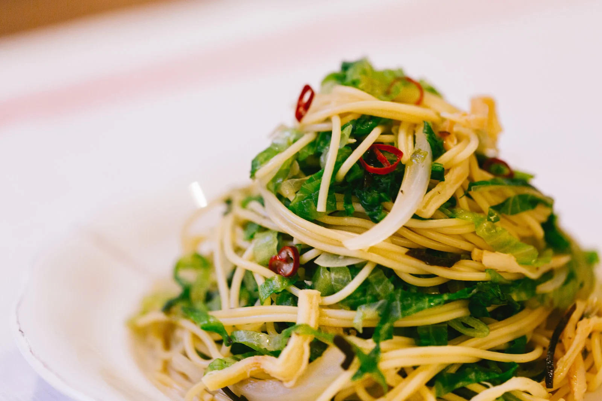
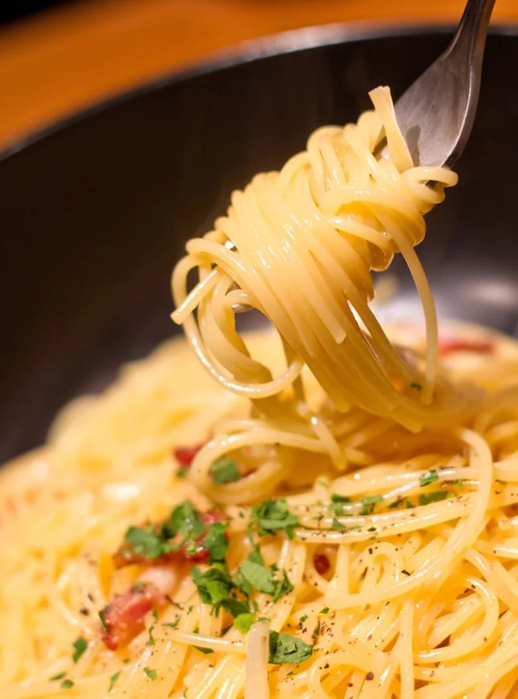

みんなのパスタレシピ
このページでは、みんなが大好きなパスタ、ペペロンチーノとカルボナーラのレシピをご紹介します！
ぜひ自分でつくって食べてみてね！
ペペロンチーノ

材料
- にんにく・・・・・1片
- 鷹の爪・・・・・1つ
- イタリアンパセリ・・・・・適量
- オリーブオイル・・・・・適量
- パスタ麺・・・・・80g
作り方
- フライパンにオリーブオイルを大さじ2入れる。
- にんにくと鷹の爪を入れて弱火で加熱する。
- 同時にパスタを茹ではじめる。
-
にんにくの香りが立ってからイタリアンパセリを入れて茹で汁を加える。
- 少し早めに上げたパスタをフライパンに入れる。
- ソースを絡めたら完成。
カルボナーラ

材料
- 卵・・・・・1個
- パンチェッタ40g
- パルミジャーノ・レッジャーノ・・・・・20g
- 生クリーム・・・・・40cc
- 黒胡椒・・・・・少々
- オリーブオイル・・・・・適量
- パスタ麺・・・・・80g
作り方
- パスタを茹ではじめる。
-
生クリームと卵とパルミジャーノ・レッジャーノをボールの中で混ぜてソースを作っておく。
- フライパンにパンチェッタとオリーブオイルを入れて中火で炒める。
-
弱火にしてから茹で上がったパスタをフライパンに入れ、2.のソースもいれる。
- パスタとソースを混ぜてあえる。
- 皿に盛りつけてから黒胡椒をかけて完成。
Copyright © pasta for everyone All Rights Reserved.